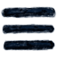

{%- for item in site.data.navigation %} {%- if item.url %}
{{ item.title }}
{%- else %}
{{ item.title }}
Menu
{{ item.title }}
{%- for entry in item.submenu %}
{{ entry.page }}
{%- endfor %}
{%- endif %} {%- endfor %}